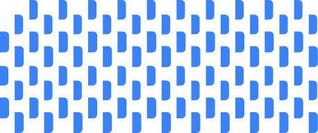
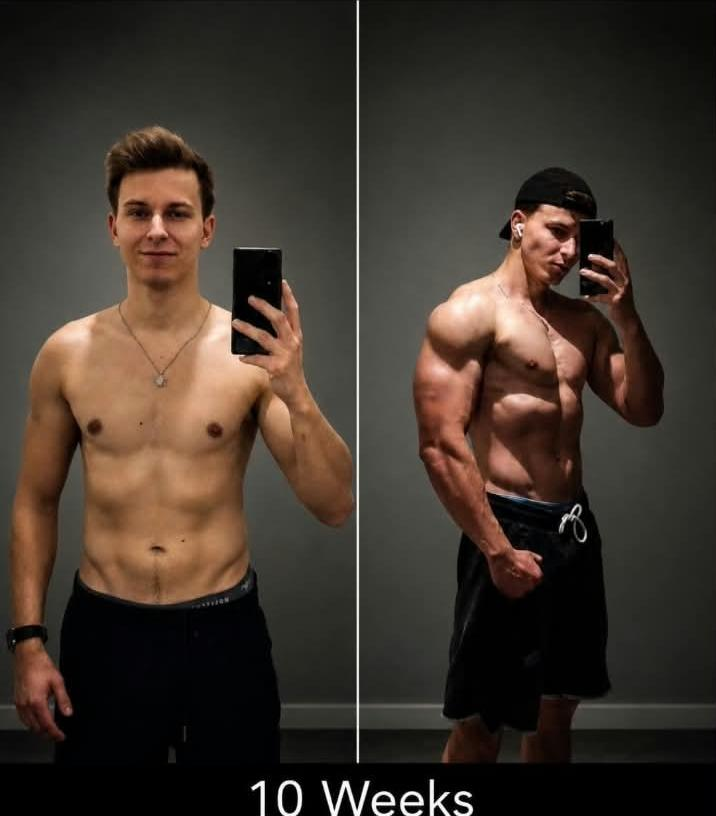
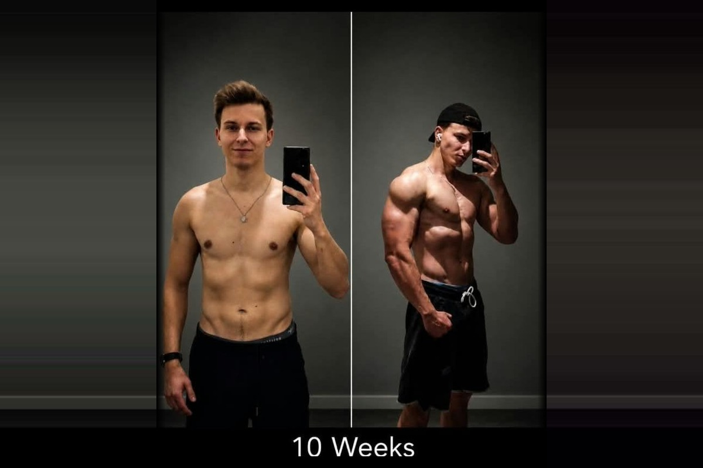

Mein Weg führte mich von der Polizei über die Fitnessbranche bis in den Vertrieb. Was sich dabei nie verändert hat: mein Interesse an Menschen, Kommunikation und echten Beziehungen.
Mehr über meinen Weg
Mein erster Kontakt mit Vertrieb begann früh. Bereits während meines Polizeistudiums sammelte ich Erfahrungen darin, auf Menschen zuzugehen, zuzuhören, Bedürfnisse zu verstehen und Vertrauen aufzubauen.

Die Polizei hat mir gezeigt, wie wichtig Ruhe, Verantwortung und klare Entscheidungen unter Druck sind. Sie hat meinen Blick auf Menschen verändert und mir beigebracht, auch in anspruchsvollen Situationen einen klaren Kopf zu behalten.


Im Fitness-Coaching habe ich gelernt, dass Wissen allein nicht ausreicht. Menschen brauchen Vertrauen, Motivation und jemanden, der ihnen wirklich zuhört. Über dreieinhalb Jahre entstanden daraus Erfahrungen und Beziehungen, die mich bis heute prägen.
Der Vertrieb war für mich bewusst der nächste Schritt aus der Komfortzone. Kaltakquise, Ablehnung und tägliche Gespräche haben mir gezeigt, dass Entwicklung durch Handeln, Wiederholung und Lernen entsteht.




Langfristig möchte ich im Vertrieb dort arbeiten, wo Menschen und Unternehmen zusammenfinden. Für mich geht es dabei nicht nur um Abschlüsse, sondern darum, zuzuhören, Vertrauen aufzubauen und herauszufinden, ob auf beiden Seiten echter Mehrwert entstehen kann.
Gute Vorbereitung ist wichtig. Aber ich glaube nicht daran, auf den perfekten Moment zu warten. Entwicklung entsteht durch Handeln, Wiederholung und Lernen. Gerade im Vertrieb bedeutet das für mich: direkt und respektvoll kommunizieren, mit Ablehnung umgehen und aus jedem Gespräch besser werden.
Schedule a Call →